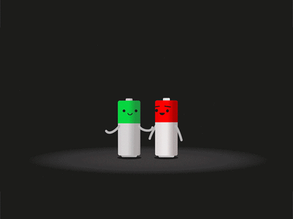

Encuesta sobre Baterías de Litio y Sodio

1. ¿Cuál de las siguientes es una ventaja principal de las baterías de litio?
Alta densidad de energía
Bajo costo de fabricación
Mayor tamaño
2. ¿Qué caracteriza principalmente a las baterías de sodio en comparación con las de litio?
Menor costo debido a la abundancia de sodio
Mayor densidad de energía
Mayor duración de vida
3. ¿Cuál es un uso emergente para las baterías de sodio?
Electrónica portátil
Dispositivos móviles
Almacenamiento a gran escala
4. ¿Cuál es uno de los principales desafíos de las baterías de sodio actualmente?
Densidad de energía relativamente baja
Alta disponibilidad de sodio
Alta eficiencia de carga
5. ¿Cuál es una ventaja de las baterías de litio en términos de vida útil?
Larga duración con una capacidad estable
Costo reducido
Uso de materiales abundantes
6. ¿Cuál es una ventaja de las baterías de sodio en términos de sostenibilidad?
Uso de materiales raros
Menor impacto ambiental debido a la abundancia de sodio
Uso de metales pesados
7. ¿Qué desafío importante enfrentan las baterías de sodio en comparación con las de litio?
Desafíos en la densidad de energía
Dificultades en el reciclaje
Abundancia de materiales
8. ¿Cuál es un área de investigación activa para mejorar las baterías de sodio?
Mejora de la densidad de energía
Reducción del costo de fabricación
Aumento de la capacidad de carga
9. ¿Qué tipo de tecnología se está desarrollando para las baterías de sodio para mejorar su rendimiento?
Tecnología de electrolito sólido
Tecnología de electrodos avanzados
Tecnología de baterías de estado sólido
10. ¿Qué característica de las baterías de sodio puede contribuir a su adopción en aplicaciones de almacenamiento de energía a gran escala?
Costo reducido y disponibilidad de materiales
Alta densidad de energía
Alto costo de fabricación
Enviar Encuesta
Regresar